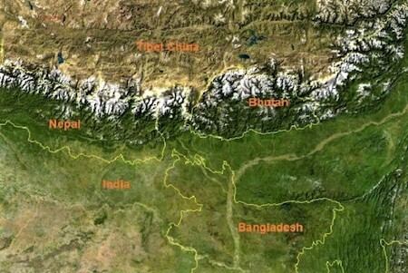
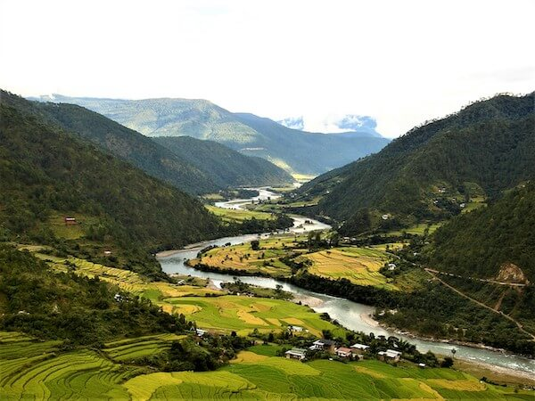

Geography of Bhutan

The princely Kingdom of Bhutan is a landlocked country, about 350 km long and 150 km wide encompassing an area
of 38,394 square kilometres. Located between longitude 88°45' and 92°10' East and latitudes 26°40' and 28°15'
North in the Eastern Himalaya, it is bounded by India in South and South-West and Tibetan autonomous region of
China in the North and North-West respectively. It shares a 470km border with Tibet (China’s Xizang Autonomous
Region) in the north and northwest, 605km with the Indian state of Sikkim in the west,
West Bengal in the southwest, Assam in the south and southeast, and Arunachal Pradesh in the east.
Virtually the entire country is mountainous, and ranges in elevation from 160m along the Indian border to the
7,570m Gangkhar Puensum on the Tibetan border. These two extremes frame a landscape that stretches from
sub-tropical to arctic-like conditions.
The maximum East-West stretch of the country is approximately 350km and north-South about 150km.
About 72 percent of kingdom is covered with forest, 7 per cent with year-round snow and glaciers, nearly 3
per cent is cultivated or agriculture areas and 4 per cent as meadows and pastures.
The rest of the land is either barren, rocky or scrubland.
Meteorology and Vegetation
Bhutan's climate varies widely depending upon elevation and the country is divided into three distinct climatic zones: alpine, temperate and subtropical zones. The climate is humid and subtropical in the southern plains and foothills, temperate in the inner Himalayan valleys of the central regions, and cold in the north with year-round snow on the main Himalayan range. The eastern part of the country is warmer than the west. The central valleys of Punakha, enjoy a semi-tropical climate with cool winters, whereas Paro, Thimphu, Trongsa and Bumthang have relatively harsher climates including snowfall in winter. 
Spring lasts from mid-March to the beginning of June, with temperatures warming gradually to 27-30 degrees centigrade by day and about 18 degrees centigrade at night. However, cold spells are possible up until the end of April, with a chance of new snow on the mountains above the valleys. Strong, gusty winds start blowing almost every day from noon to early evening. The first storms break, and they become more and more frequent with the approach of the monsoon which arrives in late June.